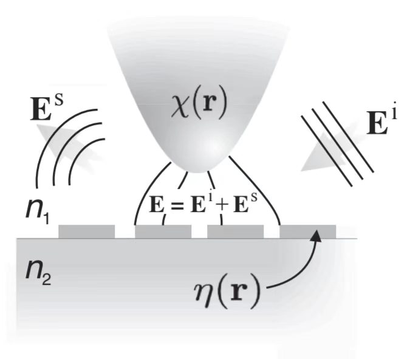

光学探针与样品间的相互作用可以用光的散射描述.
光学探针与样品在位置上相互接近，其介电极化率可以分别用\(\chi(\boldsymbol{r})\)与\(\eta(\boldsymbol{r})\)描述.
[设]入射光场为\(\boldsymbol{E}^i\)，为齐次Helmholtz方程的一个解.
入射场会产生可在远场探测到的散射波\(\boldsymbol{E}^s\)，因此，总场为：
$$\boldsymbol{E} = \boldsymbol{E}^i + \boldsymbol{E}^s$$
图示为通用几何结构.
形式上，总场的Helmholtz方程为：
$$(\nabla^2 + k^2)\boldsymbol{E} = 0$$可以写作：
$$\begin{aligned} (\nabla^2 + k_0^2)\boldsymbol{E} &= -k_0[\epsilon(\boldsymbol{r} - 1)]\boldsymbol{E}\\ &= -k_0^2[\eta(\boldsymbol{r}) + \chi(\boldsymbol{r})]\boldsymbol{E} \end{aligned}$$利用入射场的性质：
$$(\nabla^2 + k_0^2)\boldsymbol{E}^i = 0$$ $$\therefore (\nabla^2 + k_0^2)\boldsymbol{E}^s = -k_0^2[\eta(\boldsymbol{r}) + \chi(\boldsymbol{r})]\boldsymbol{E}$$这是关于散射场\(\boldsymbol{E}^s\)的非齐次Helmholtz方程.
光学探针与样品的介电极化率出现在源项中.
上式可以利用\(\boldsymbol{G}(\boldsymbol{r}, \boldsymbol{r}')\)形式求解.
光学探针：一种真实存在的光学结构，形状多样.
样品：具有一定光学性质和空间结构的物质对象.
光存在于光学探针与样品周围的空间中.